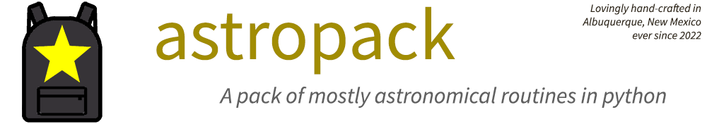

Astropack Documentation
Astropack began as my personal utilities repo in support of my independent variable-star and asteroid/minor planet observing programs. Consider this a stub code library. Astropack will grow to cover all manner of needs not addressed by |astropy| and other libraries.
Astropack is also the first package that I’ve tested and documented to an Astropy-like level of detail.
Important
1. What’s here is good to go. It’s tested and documented. Indeed it’s tested against the documentation.
2. So you can install it, or take code from it, or adapt code to taste. But let’s make a deal–if you take or use 10 lines of code or more, you’ll please make an attribution back to me and Astropack. Fair enough? (That’s pretty much what the license says, anyway.)
3. Astropack is a work in progress (April 2022). It’s marked as 0.1 beta version, but it’s more like Deep Beta. So long as it remains in version zero-point-anything, I may well remove items, or I may change the API, and I may even make breaking changes to the API (I’ll try not to, but in any version 0.x, all’s fair). But whatever is in the repo, that code will work as documented. The test files are also in the repo and they’ve all passed, always.
A pattern arising in much of the code is what I call server classes.
That is: classes and their objects that I’ve designed to (1) get data, (2) organize
and extend the data automatically, and (3) serve it to the user’s code on demand.
Like a particularly talented tecnical assistant.
You’ll see this server pattern, for example, in Astropack classes
Astronight, AtlasRefcat2, and Site.
A class constructs an object and then delivers a clean,
reliable and extremely well-defined bit of data whenever the user (the user’s code,
really) needs it. That bit of data, and not more.
Maybe an quick example, from class Astronight (which represents one observing site
during one observing night):
>>> from astropack.almanac import Astronight
>>> from astropack.ini import Site
>>> this_site = Site('My Dome')
>>> an = Astronight(this_site, 20220402)
>>>
>>> an.timespan_dark
Timespan(2022-04-03 02:02:36.490, 2022-04-03 12:07:51.845)
>>> an.moon_skycoord
<SkyCoord (ICRS): (ra, dec) in deg
(34.98185288, 11.95750862)>
>>>
>>> from astropy.coordinates import SkyCoord
>>> betelgeuse = SkyCoord('05h 55m 10.30536s +07d 24m 25.4304s')
>>> print(an.timespan_observable(betelgeuse, min_alt=30, min_moon_dist=45))
Timespan '2022-04-03 02:02:36.490' to '2022-04-03 04:08:12.314' = 7535.824 seconds.
In other words: what I mean by a server class is a bundle of data that speaks for itself. A reference book that opens itself to just the right page when you need it to, and hides away when you don’t. It’s how much of Astropack is coded. It’s ideal for technical coding.
Or so I say. Check it for yourself. Right here, in fact:
Documentation, by Module
- Observation Planning (
astropack.almanac) - Catalog retrieval (
astropack.catalogs) - Point and Vectors classes for Photometry (
astropack.geometry) - FITS reading, Aperture Photometry (
astropack.image) - Site, Instrument and Observer .ini files (
astropack.ini) - Astronomical Reference Data (
astropack.reference) - Mixed-Model Regression (
astropack.stats) - Timespan class & other utilities (
astropack.util) - Web Retrieval for Minor Planets/Asteroids (
astropack.web)
And this is after the TOC.